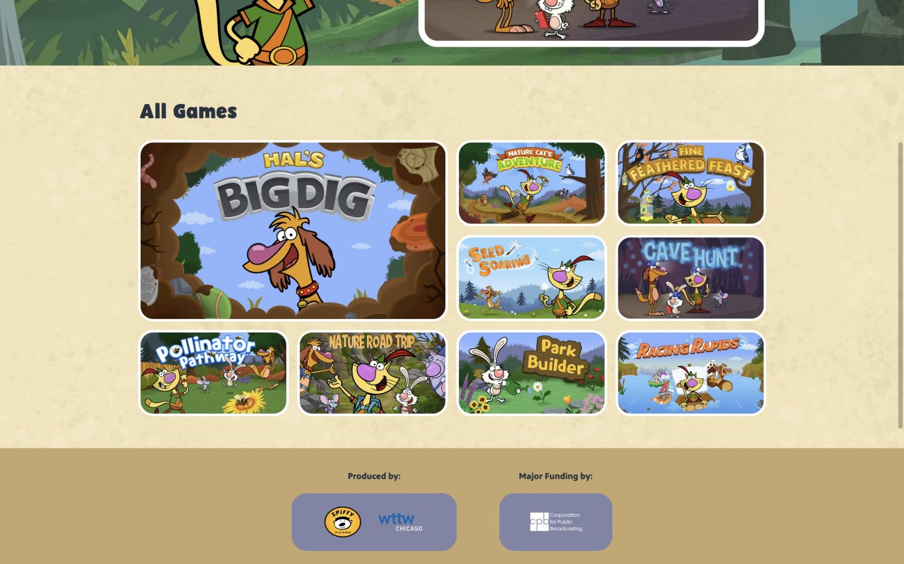
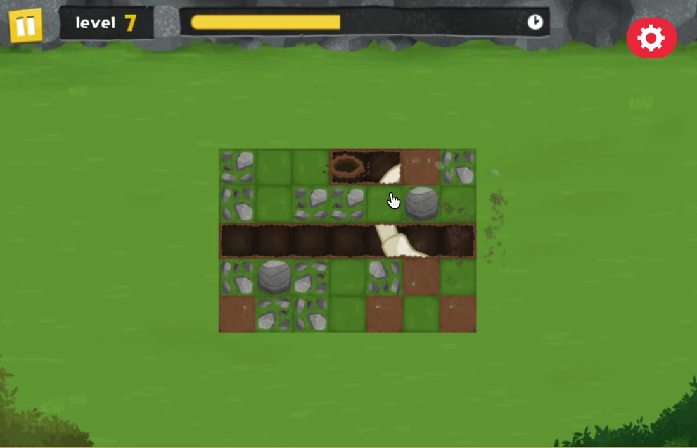
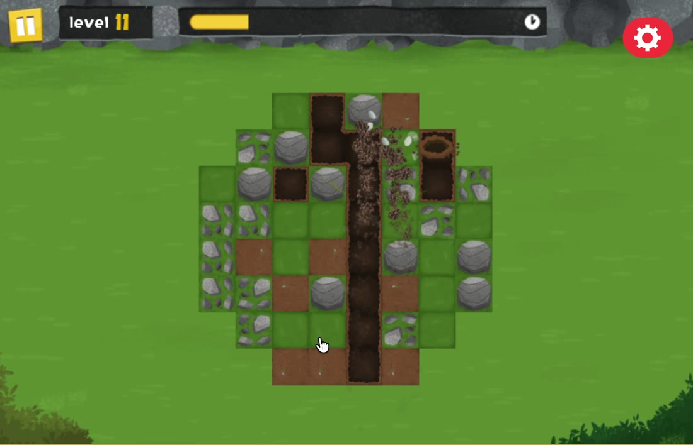
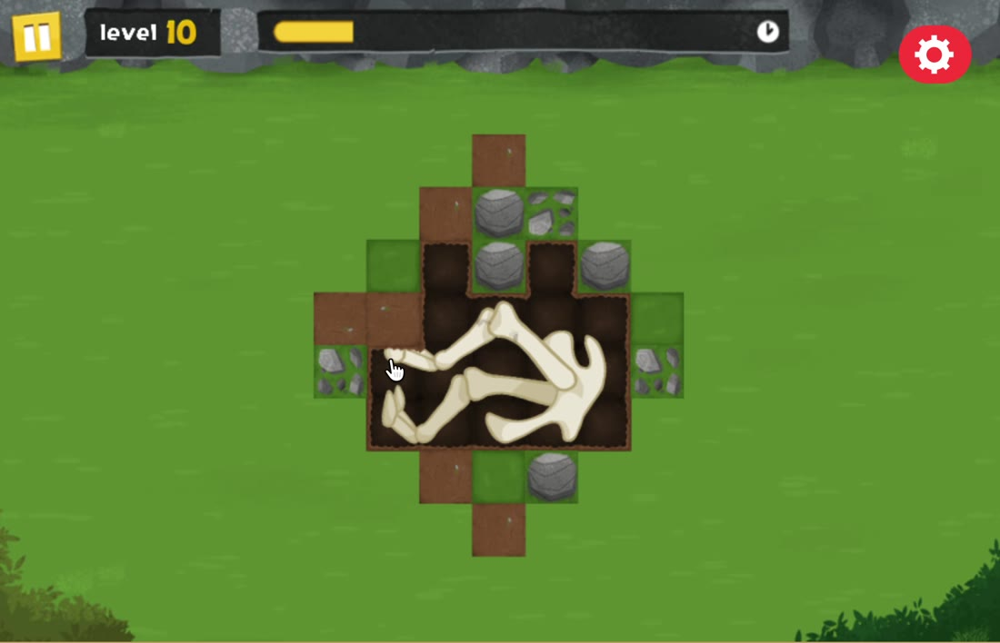
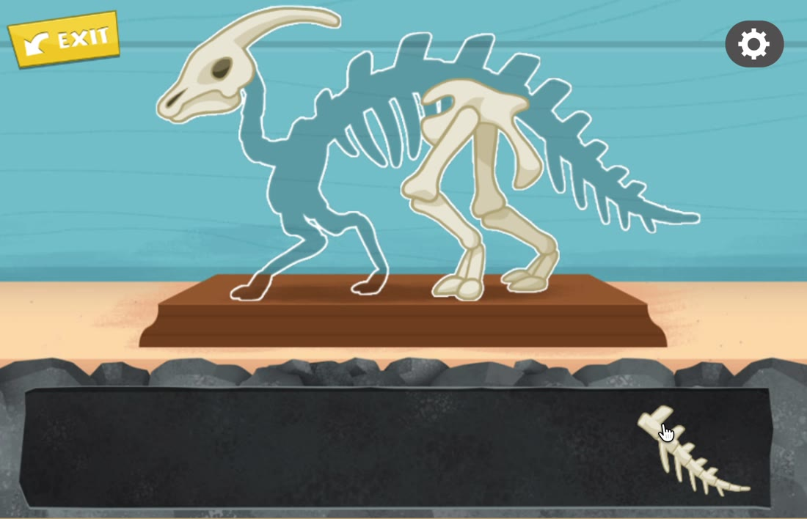

Case study · CloudKid for PBS KIDS
Hal's Big Dig
A fast, arcade-style fossil dig for PBS KIDS' Nature Cat. Tap to dig, let the power-ups go off, and bring your finds home to build dinosaur skeletons in Hal's Dog House.
- Client
- PBS KIDS · Nature Cat
- Studio
- CloudKid
- My role
- Game concept, programming
- Built with
- HTML5, JavaScript, SpringRoll
Gameplay reel: digging, power-ups, the Dog House trophy room, and fossil assembly.
The project
Hal's Big Dig was one of a set of games made for the launch of Nature Cat, which was brand new on PBS KIDS at the time. Our small studio got together to pitch game ideas for the show; the concept for this rapid, arcade-style dig was mine, and I took the lead on developing the gameplay with support from an amazing team of animators and senior devs.
It's still live on PBS KIDS today, and it has the large first tile in the Nature Cat games grid, so it must have been a favorite to more than just me!

Designed to feel a little older
I designed the gameplay to feel slightly above the target age: quick, hectic, and a little tough, like the arcade games older kids play. Each level is a grid of dirt, grass and rocks with a fossil hidden underneath, and you race the timer to dig it out.
To keep it playable for young kids, power-ups go off automatically. A gopher tunnels across a whole row, a pickaxe smashes a full column, and a shovel clears a wide area. Kids don't have to stop and decide when to use them, and the bursts of digging make the game feel frantic and fun, like an excited puppy.
Power-ups fire automatically: fewer decisions for young players, and more chaos on screen.


Balancing the drops
A dig game lives or dies on what you find. I studied how loot boxes and drop rates work so I could tune how often fossils and power-ups turn up, keeping the game generous enough to stay exciting without giving everything away.
I also built the system that chooses which fossil goes into each level. Grids come in different shapes and sizes, so it checks that the chosen fossil actually fits the level's grid before placing it.

A reason to keep digging
Traditional arcade games just chase points. Since this game was meant to be hectic and a little tough, I wanted every session to leave you with something. Each fossil you find goes back to Hal's Dog House, where you drag the pieces onto a skeleton and add the finished dinosaur to the trophy room shelves.
The collection gives the digging a bigger goal and a reason to come back and play again.
